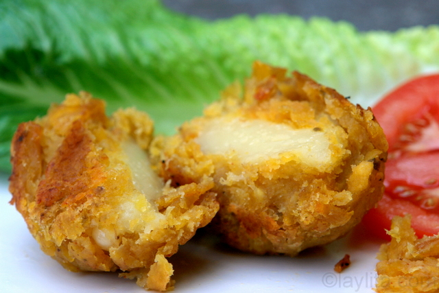

Bolon de Verde: Delcious Plantain Balls

Plantain Balls with cheese
Bolon de Verde is a dish of Ecuadorian gastronomy ,
it is one of the most popular ways to consume green bananas as breakfast,
on the Ecuadorian coast . It can be prepared with fried or boiled greens and contains a large amount of
carbohydrates and proteins.
Plantain Dumplings
These plantain dumplings are a delicious and versatile dish that can be filled with cheese, chorizo, or chicharrones. They are perfect as a side dish or a main course.
Ingredientes
- 4 green plantains, peeled and cut in medium sized chunks
- 4-5 tablespoons butter or lard
- 2 tablespoons oil (canola or sunflower)
- 1 tablespoon hot pepper or chili powder
- 1 teaspoon cumin
- 1 cup grated cheese and/or 1 cup cooked chorizo or chicharrones (fried pork belly) or bacon
- Salt to taste
- Ground peanuts (optional – add when mashing the green plantains)
Instructions
- Melt the butter or lard over medium heat in a large sauté pan.
- Add the plantain chunks and cook for about 40 minutes or until they are very soft, turning them about every 10 minutes. They should be slightly golden but not too crispy.
- Sprinkle the cooked plantains with the chili powder, cumin, and salt.
- Transfer the plantain pieces to a bowl while they are still hot (be careful not to burn yourself).
- Mash the plantains using a wood masher – or just a regular potato masher – until you obtain a chunky dough-like consistency.
- Form balls slightly smaller than the size of a tennis ball with the dough.
- Make a hole in the middle of each ball and fill it with the cheese, chorizo, or chicharrones (mixed with ground peanuts). Gently press the filling into the hole, cover the filling, and reshape it back into a ball shape.
- Heat the oil over high heat, add the stuffed plantain dumplings, and fry them until they are golden and crispy on each side.
- Transfer to a plate lined with paper towels to drain the grease and serve immediately.